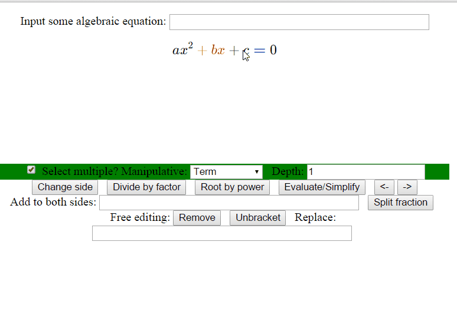

AugMath
Vision
AugMath is based on the idea that while Maths (broadly defined as the study and creation of structures) can and should explore its abstract aspects, it can not scape a "representation" when doing something that requires a tool that augments the human mind alone, and thus it should embrace, explore, and even seize this aspect as well. Really the work I'm doing here in JavaScript is the first baby step in a much grander vision of a future where Mathematics, Physics, Art, Engineering, Music, Philosophy, and other aspects of the Human Experience become much more intertwined and hard to distinguish. I imagine the classroom having become a virtual space for the exploration of structures, creating virtual worlds, whether they are to explore some awe-inspiring idea in a video game, or to make a tool to predict and model bosonic excitations in condensed matter.
Let's come back to the mathematics, from where the whole idea emerged. I have been studying Physics at the University of Oxford for 3 years now, and thus do a lot of math. How? Mostly with pen and paper, just like everyone else, now and for hundreds of years. But there was something bugging me. The things I was writting down on the paper were not the things going on in my head. In my head, the different symbols were free to move in the 3rd and 4th dimension as well as the 2 dimensions of the paper. I would imagine moving them in certain ways, manipulating them, using all the natural concepts for manipulating stuff built-in in the brain, with the only constraint of certain learned rules of algebra or calculus.
But there was another reason I felt this frustration now, and why probably, someone like Newton, wouldn't have: I knew this didn't have to be this way. Why? Computers. I am not an avid video-game player (the reasons why are interesting, and related to all of this, but basically, I'm more interested in the "real world"), but I have played them. I have also played board games. I don't want to get into the video-game vs board-game fan boys debate, but one thing was clear to me: the sheer increase in possibilities in interface and engineered experinece video-games offer has allowed the creation of much more natural and immersive games. And of course, this isn't exclusive of games, but a similar thing has happened in many other areas. We have been imagining these things for centuries, and millenia, but only recently we've begun outsourcing our imagination to such a degree that we can experience things today, that were unimaginable before, simply due to the computational complexity of these experiences.
Now, computers have definitely changed Maths, and how a lot of Maths is done. However, having used Mathematica and other software, I still didn't feel fulfilled. It seems the main effort has been in extending what we can do, which is great, but very little effort has been put in improving what we could already do, and in making it much less tiresome and much more fun. The reason for this may well be the general neglect in the engineering and science community (which created programs like Mathematica) of the arts, in particular design (even though I consider design to be the modern realization of my dream of engineering being recognized as the "ultimate" art). The truth is that designers know the difference a good design makes on tools, inteneded to be used by humans. And, at least, the kind of math I do in physics, is that: a tool intended to be used by humans.
There's another powerful aspect that will come from the necessary bringing together of the arts and sciences (a new Age of Wonder): education. I remember when I was in highschool and was thinking about relativity for the first time. I tried to come up with it myself, but eventually had to look up for some help online. I remember reading Wikipedia's page and not getting it much. Then I watched a video from an old documentary series called "The Mechanical Universe". The series included space-time animations as well as math animation, of a kind (which the creator, Jim Blinn, called "algebraic ballet") I haven't really found elsewhere, and which ultimately inspired what I'm doing today. The important thing is how effective it was at teaching complicated ideas and derivations. The ultimate reason I want AugMath to exist is the accumulated frustration of having to learn so many complicated concepts and knowing how much easier it would have been, were there to have been a "The Mechanical Universe" episode about it.
Usage
As this is still being built, and the UI will surely change a lot, here's a quick demo of most of the current manipulations:  (Created using ScreenToGif)
Development
Node.js is required for development. You can download it here.
Install bower, the frontend dependency manager, gloabally with the following command
npm install -g bowerFrom the project root, use bower to install the front end dependencies
bower installOther notes
The acutal script is in 'script.js', the others are older versions.
AugMath uses KaTeX for math rendering, Coffeequate, for some algebraic operations and Math.js for some math operations, and jQuery for animations and stuff.
Here is a Worflowy list I made to organize the stuff that goes into AugMath.
Here is a Codepen to test it live.
Some discussion in this Forum
Math Tree
The main object in AugMath is a tree created with TreeModel, which contains all the manipulatives in the equation or expression. This is done through the function parse_poly. This creates a tree by going through the terms in an expression, and going through its factors. Factors that can contain whole expressions within them are then recursively analyzed in the same way. This is accessed through the math_root object.
TODOs
Here are some things that one can work on:
Improve GUI design
Improve the animations of some manipulations (with jQuery animations, or otherwise), like the fraction splitting or the factor factoring or ditribution.
Add manipulations (see Workflowy list for suggestions or just think some of your own)
Add validations to manipulations. Many manipulations can break the math if the user hasn't selected the right stuff. Change code so that nothing happens if right stuff isn't selected.
More (possibly) challenging (and fun) stuff:
Refactor the tree-building function to use the semantic MathML KaTeX uses to build the tree. Probably requires knowing how KaTeX works quite well, as well as knoweledge of MathML.
Add drag and drop capabilities, so that moving-based manipulations can be done that way. While you are dragging, visual feedback should be offered of the places you can drop it.
Allow to make selections with keyboard arrow keys (up and down for changing depth) to traverse the tree.